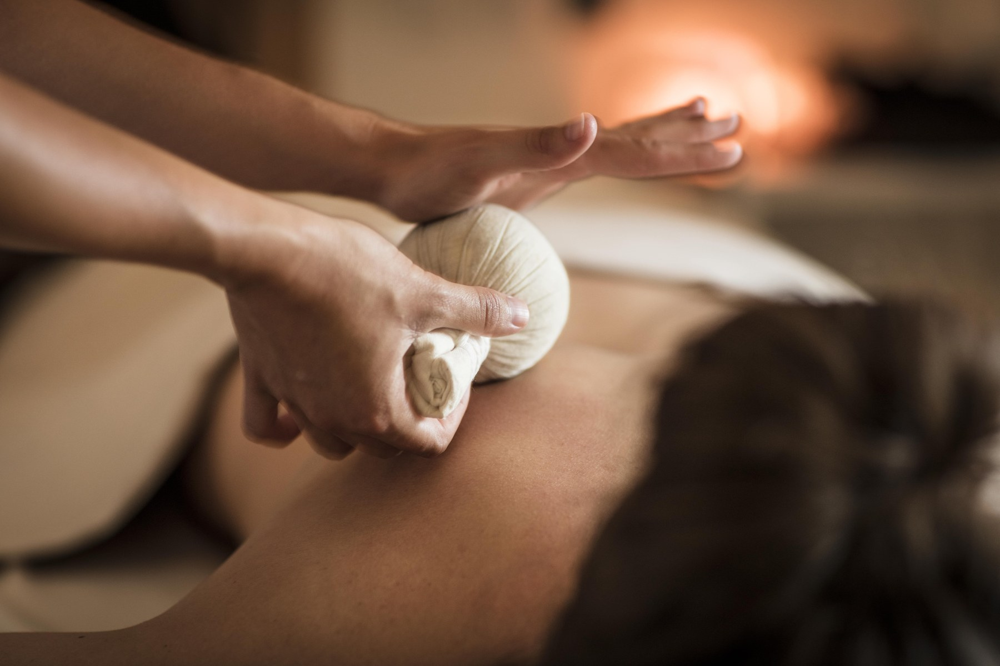
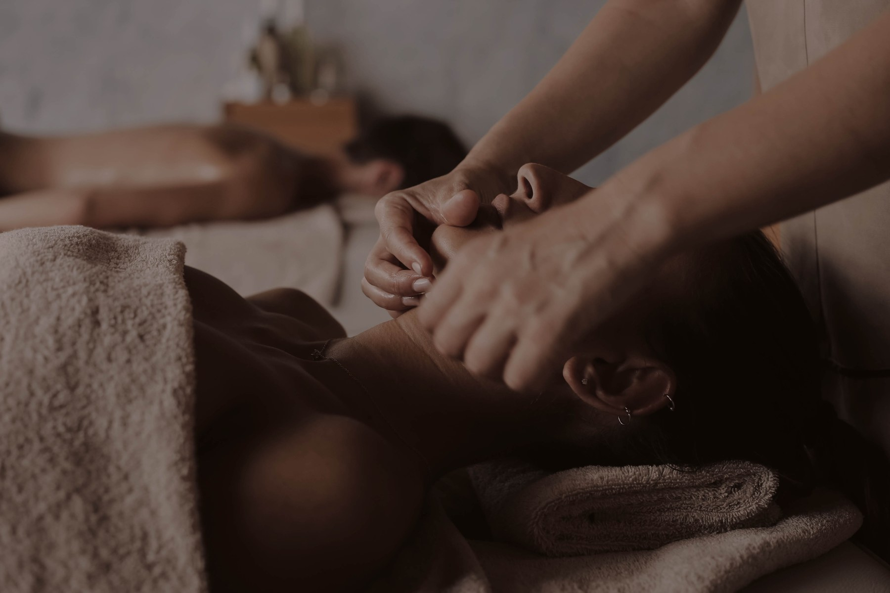
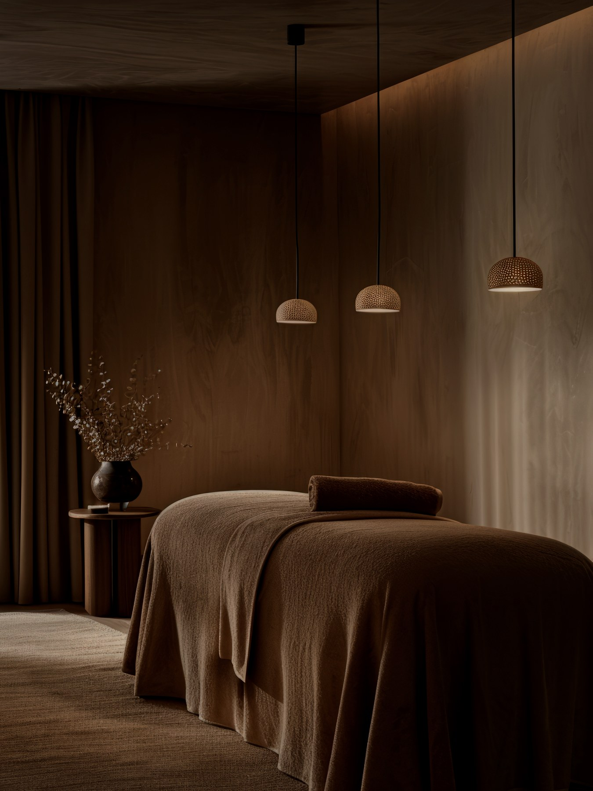

Our Clinical Services & Conditions
Personalized, non-pharmacological therapies designed to stimulate neurovascular reflex arcs, relieve chronic pain, and re-establish visceral balance.

Clinical Foot Reflexology
Our signature modality combines automated temperature-controlled hydrotherapy foot immersion with targeted manual reflex zone activation. Dr. Mehraj Abdullah stimulates precise neurological zones on the plantar and dorsal surfaces of the feet, activating corresponding organ systems and triggering profound neuro-muscular release.
- ✓ Stimulates over 7,000 plantar reflex nerve endings
- ✓ Increases systemic arterial and capillary circulation
- ✓ Relieves heel spurs, plantar fasciitis, and leg fatigue
- ✓ Includes digital warm foot spa hydrotherapy preparation

Classical Acupuncture & Meridian Balancing
Using micro-fine, single-use sterile stainless steel needles placed at validated anatomical acupoints, this therapy modulates the central nervous system, shuts pain transmission gates at the spinal cord level, and stimulates the release of endogenous endorphins and anti-inflammatory neurochemicals.
- ✓ Strict 100% single-use sterile disposable needles
- ✓ Natural pain modulation for joint, muscle, and nerve disorders
- ✓ Calms overactive sympathetic fight-or-flight nervous states
- ✓ Administered personally by Dr. M. Mehraj Abdullah, M.D (Acu)

Thermal Spine Decompression Bed
Our specialized mechanical spine decompression system features internal jade rollers and far-infrared deep thermal heating. Moving gently along the physiological curvature of the spine from cervical to sacral segments, it decompresses intervertebral discs and releases impinged nerve roots without forceful twisting.
- ✓ Relieves sciatica, lumbar disc bulges, and lower back tension
- ✓ Eases stiff cervical vertebrae and persistent frozen shoulder
- ✓ Deep far-infrared warmth penetrates paraspinal musculature
- ✓ Safe, restorative, and non-invasive mechanical traction

Internal Organ & Visceral Wellness
Functional gastrointestinal complaints often stem from autonomic imbalances and restricted microcirculation. By targeting reflex zones connected to the vagus nerve and digestive meridians, this therapy relieves chronic hyperacidity, peptic ulcers, bloating, and metabolic sluggishness.
- ✓ Drugless management for chronic Gastritis and Acidity
- ✓ Supportive protocol for Stomach & Peptic Ulcer healing
- ✓ Kidney stone support and urinary tract meridian balancing
- ✓ Normalizes bowel peristalsis and visceral tension

Hormonal Harmony & Women's Health
Gentle, dignified, and supportive non-drug therapies focused on restoring pelvic arterial circulation, soothing the nervous system, and assisting the body's natural endocrine feedback loops.
- ✓ Supportive protocol for Infertility and natural conception preparation
- ✓ Targeted reflex zones for Ovarian Cysts and Uterine Fibroids
- ✓ Relieves menstrual pain, irregular cycles, and pelvic congestion
- ✓ Addresses hormonal hair loss and stress-induced thyroid imbalances

Vascular Circulation & Vitality
Specialized manual and reflex pressure protocols designed to assist venous blood return from the extremities, drain congested lymphatic channels, and normalize microvascular blood pressure to sensory organs.
- ✓ Improves venous return for Varicose Veins and leg heaviness
- ✓ Drains peripheral Edema and fluid retention
- ✓ Supports microcirculation for Ear Tinnitus (ringing in the ears)
- ✓ Supportive intraocular tension therapy for Glaucoma comfort
Advanced Equipment Supporting Traditional Science
We invest in dedicated therapeutic devices that complement manual reflexology techniques to deliver deep, lasting patient recovery.
Digital Foot Spa Hydrotherapy
Precise temperature control with circulating water jets to vasodilate peripheral capillaries prior to reflexology.
Thermal Spine Traction Bed
Natural jade stone rollers heated with far-infrared energy to mobilize spinal vertebrae and relieve nerve compression.

Sterile Private Therapy Cubicles
Individualized treatment spaces fitted with hospital-grade sanitization, private curtains, and peaceful background acoustics.
Transparent Consultation Fee: ₹500
Includes complete diagnostic pulse and reflex evaluation by Dr. M. Mehraj Abdullah, M.D (Acu).
Conditions We Treat & Support
Personalized clinical non-drug care across 19+ conditions, bridging neurological reflex zone therapy and classical meridian balancing.
1. Spine, Joint & Nerve Health
Nerve impingement, disc degeneration, postural strain, and myofascial stiffness.
Therapeutic Mechanism: Automated thermal jade spine decompression widens intervertebral spaces, relieving pressure on sciatic roots. Bladder and Gallbladder meridian acupuncture subsides local inflammation without analgesics.
2. Visceral, Digestive & Metabolic Care
Gastric acidity, gastrointestinal irritation, metabolic imbalances, and respiratory fatigue.
Therapeutic Mechanism: Stimulation of solar plexus reflex zones and Stomach/Spleen meridian channels tones the vagus nerve, normalizing acid secretion and soothing visceral spasms.
3. Women's Health & Hormonal Harmony
Supportive care for reproductive wellness, ovarian health, cycle comfort, and hormone regulation.
Therapeutic Mechanism: Enhancing pelvic microcirculatory perfusion through specific medial malleolus reflex points and Ren/Spleen meridian stimulation, relieving venous stagnation.
4. Vascular Circulation & Sensory Vitality
Venous insufficiency, fluid retention, auditory microcirculation, and ocular tension.
Therapeutic Mechanism: Targeted manual reflexology and peripheral hydrotherapy activate the calf muscle pump, accelerating venous drainage and relieving vascular congestion.
Choose the Plan for Your Healing Needs
Whether you are visiting for an initial root-cause evaluation or committing to a structured rehabilitation course, we provide transparent, unhurried care.
Clinical Consultation
Comprehensive root-cause diagnosis and meridian mapping
- ✓ Detailed 45-min diagnostic intake with Dr. Mehraj Abdullah
- ✓ Somatotopic foot reflex tender point palpation
- ✓ Pulse diagnosis and spinal posture evaluation
- ✓ Comprehensive review of previous medical reports & scans
Wellness Package
Full restorative integration for body, spine, and mind
- ✓ Digital Foot Reflexology Hydrotherapy Spa basin
- ✓ Classical Acupuncture meridian balancing session
- ✓ Automated Spinal Thermal Decompression bed therapy
- ✓ Single-use sterile clinical needles guaranteed
Chronic Care Protocol
Designed for persistent, long-standing, or recurring physical complaints
- ✓ Targeted for Sciatica, Lumbar Disc, Neck & Frozen Shoulder
- ✓ Supportive visceral therapy for Gastritis & Ulcers
- ✓ Sequential progress review after each cycle
- ✓ Priority scheduling & dedicated clinic parking
Looking for professional certification courses in Foot Reflexology, Sujok, Moxa, or Classical Acupuncture Diploma?
Explore Balance & Bliss Academy & Fee Details →